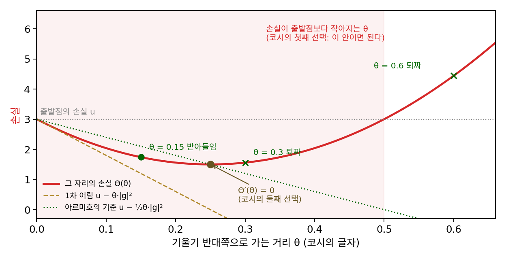
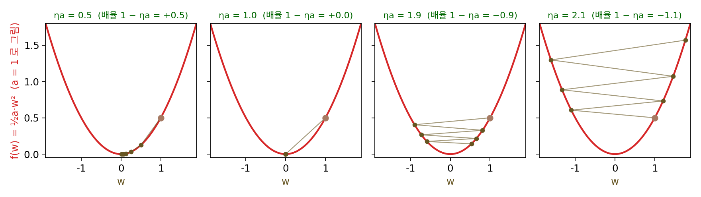
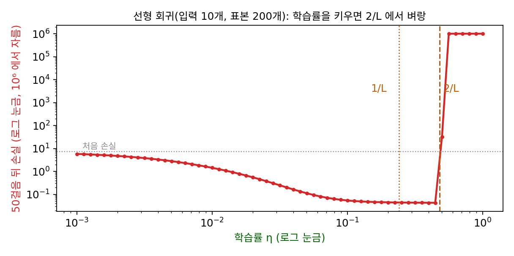

학습률의 상한: 2/L 을 넘으면 튕겨 나간다
영수증 회귀에서 학습률 0.1로는 열네 걸음이 걸렸다. 학습률을 키우면 걸음이 커지니 더 빨리 닿을 것 같다. 실제로 0.2로 올리면 네 걸음 만에 0.001 안쪽에 든다. 그런데 이 장의 물음에서 본 것처럼, 신경망에서는 학습률을 키우다 보면 어느 순간 손실이 폭발한다. 걸음을 키우는 것이 언제까지 이득이고, 어디서부터 해가 될까? 그 경계는 미리 알 수 있을까?
역사: 한 방향으로 얼마나 갈 것인가
코시도 이 물음을 피하지 않았다. 그는 1847년의 글에서 θ를 고르는 법을 두 가지 적었다. 하나는 θ를 충분히 작게 잡는 것이다. 그러면 1차 어림이 맞아서 u가 반드시 준다. 다른 하나는 θ를 키워 가며 u가 더는 줄지 않는 곳, 곧 θ에 대한 미분이 0인 곳까지 가는 것이다. 둘째 방법은 걸음마다 1차원 최소화 문제를 하나씩 더 풀어야 한다. 「충분히 작게」가 얼마인지는 코시도 말하지 않았다. 르마레샬은 이 대목을 두고, 수렴을 보장하려면 함수가 그냥 연속인 것보다 더 고른 성질이 필요하다는 것을 지금은 안다고 적었다.

거의 백 년 뒤, 논리학자로 더 알려진 해스켈 커리(Haskell Curry)가 둘째 방법, 곧 걸음마다 그 방향의 최솟값까지 가는 가장 가파른 내리막이 어떤 조건에서 최솟값으로 모이는지를 따졌다. 1944년의 짧은 논문 「비선형 최소화 문제를 위한 가장 가파른 내리막 방법」이다. 커리는 2차 세계대전 동안 학교를 떠나 미군 프랭크퍼드 병기창 등에서 응용 수학 일을 했고, 이 논문도 그 무렵에 나왔다. 그 뒤 1966년에 래리 아르미호(Larry Armijo)는 제목에 그 조건을 그대로 넣은 세 쪽짜리 논문 「1차 편미분이 립시츠 연속인 함수의 최소화」를 냈다. 기울기가 립시츠 상수 K로 묶여 있으면, 걸음 크기를 1/(2K)로 고정해도 최솟값으로 간다는 것이다. 그는 K를 모를 때를 위해, 큰 걸음에서 시작해 손실이 충분히 줄 때까지 걸음을 반씩 줄이는 규칙도 함께 냈다. 「충분히 작게」에 처음으로 숫자가 붙은 것이다.
학습률 넷으로 그릇을 내려가기
경계를 가장 깨끗하게 보려면 곡률이 어디서나 같은 함수, 곧 바닥이 0에 있는 포물선 f(w) = ½aw²를 보면 된다. a는 2차 미분, 곧 그릇이 얼마나 가파르게 휘었는지다(여기서 곡률은 2차 미분의 크기를 가리킨다). 영수증 회귀의 손실도 바닥을 0으로 옮기면 이 꼴이고, 그때 a = (1² + 2² + 3²)/3 = 14/3 = 4.667이다. 기울기는 aw이므로 한 걸음은 w ← w − ηaw = (1 − ηa)w이다. 걸음마다 바닥까지의 거리에 같은 배율 1 − ηa가 곱해진다. η와 a는 곱 ηa로만 들어가므로, a가 무엇이든 ηa만 정하면 아래 표가 그대로 나온다. w₀ = 1에서 출발했다.
| ηa | 배율 1 − ηa | k = 1 | k = 2 | k = 5 | k = 20 |
|---|---|---|---|---|---|
| 0.5 | 0.5 | 0.500 | 0.250 | 0.031 | 0.000 |
| 1.0 | 0 | 0.000 | 0.000 | 0.000 | 0.000 |
| 1.9 | −0.9 | −0.900 | 0.810 | −0.590 | 0.122 |
| 2.1 | −1.1 | −1.100 | 1.210 | −1.611 | 6.727 |
ηa = 0.5면 거리가 걸음마다 반이 되고, ηa = 1이면 한 걸음에 정확히 바닥에 닿는다. 그보다 키우면 바닥을 지나쳐 반대쪽에 떨어진다. ηa = 1.9에서는 넘어갈 때마다 거리가 0.9배가 되어 부호를 바꿔 가며 줄어들지만, 0.001 안에 들기까지 66걸음이 걸린다(ηa = 0.5는 10걸음). ηa = 2.1에서는 넘어갈 때마다 1.1배씩 멀어져 50걸음 뒤에는 117, 100걸음 뒤에는 13,781이 된다. 경계는 배율의 크기가 1이 되는 곳, 곧 1 − ηa = −1인 η = 2/a다. 영수증 회귀라면 2/4.667 = 0.4286이다. 학습률 0.4로 학습하면 8.29, 1.11, 7.34, 1.94, …처럼 답 4.44의 양쪽을 크게 오가면서도 다가가고, 0.45로 올리면 9.33, −0.93, 10.36, −2.06, …으로 점점 멀어진다. 0.4와 0.45 사이, 정확히는 0.4286에서 학습이 갑자기 무너지는 것이다.

포물선이 아닌 손실은 자리마다 곡률이 다르다. 그래서 「가장 가파르게 휜 곳의 곡률」을 알면 된다. 기울기가 바뀌는 빠르기의 상한, 곧 어느 두 점을 잡아도 기울기의 차이가 두 점 사이 거리의 L배를 넘지 않는다는 성질이 L-매끄러움이었다. 곡률이 어디서나 L 이하라는 말과 같다. 이 성질이 있으면 손실은 지금 자리에서 그은 포물선 아래에 눌려 있고, 한 걸음 뒤의 손실에 대해 다음 부등식이 성립한다.
괄호 안 1 − Lη/2가 양수이면, 기울기가 0이 아닌 한 손실은 걸음마다 반드시 준다. 그러려면 η < 2/L이어야 한다. 이 경계 2/L을 학습률의 상한 (손실이 줄어든다고 장담할 수 있는 학습률의 경계 / step-size limit 2/L)이라 한다. 보장되는 줄어듦 η(1 − Lη/2)는 η = 1/L에서 가장 크고(|g|²/L의 0.5배), 2/L에 가까워질수록 0으로 떨어진다(ηL = 1.9면 0.095배). 아르미호의 1/(2K)는 이 범위 안의 안전한 한 점이다. 그리고 포물선 표가 보여 주듯 2/L은 겁을 주려고 잡은 값이 아니다. 곡률이 정확히 L인 방향이 있으면 그 너머에서는 실제로 튕겨 나간다.
ML에서: 학습률 찾기
신경망의 L은 미리 알 수 없다. 그래서 실무에서는 경계를 실험으로 찾는다. 레슬리 스미스(Leslie Smith)는 2017년 논문 「신경망 학습을 위한 주기적 학습률」에서 짧은 학습을 한 번 돌리면서 학습률을 아주 작은 값에서 큰 값으로 조금씩 키우고, 성능이 오르기 시작하는 곳과 흔들리거나 나빠지기 시작하는 곳을 읽어 학습률의 범위를 정하자고 했다. 그는 이것을 「학습률 범위 시험(LR range test)」이라 불렀고, 같은 생각이 여러 학습 도구에 「학습률 찾기」 기능으로 들어가 있다.
선형 회귀(입력 10개, 표본 200개)에서 학습률만 바꿔 가며 50걸음씩 돌려 보면 그 벼랑이 보인다. 이 문제의 L은 헤시안(2차 편미분을 모은 행렬)의 가장 큰 고윳값, 곧 손실이 가장 가파르게 휜 방향의 곡률로 4.149이고 2/L = 0.482다. 50걸음 뒤의 손실은 학습률을 키울수록 고르게 줄다가, 0.447(1.85/L)에서 가장 작고, 바로 다음 칸인 0.501(2.08/L)에서 처음 손실 7.15보다 커진 31.7로 뛴다. 손실이 가장 낮은 학습률이 무너지는 학습률 바로 옆에 붙어 있다는 것이 학습률을 고르기 까다로운 까닭이다. 학습률 찾기에서 벼랑 바로 앞 값이 아니라 그보다 몇 배 작은 값을 고르라고 권하는 것도 이 때문이다.

문제 4. 머핀을 몇 개 구울까
동네 빵집의 머핀은 하루에 40개씩 팔린다. 주인은 첫날 60개를 구웠고, 다음 날부터는 「오늘 구운 개수 − r × (오늘 남은 개수)」만큼 굽기로 했다. (가) r = 0.5, 1, 1.5, 2.5일 때 엿새 동안 구운 개수를 적어라. (나) 어떤 r까지는 결국 40개에 자리를 잡고, 어디서부터 안 되는가? (모자란 날은 남은 개수가 음수라고 보자.)

남은 걸 많이 반영할수록 빨리 맞춰지겠죠. r = 2.5로 세게 고치면 첫날 남은 20개의 2.5배, 50개를 덜 구워서 둘째 날 10개요. 어… 30개가 모자라네요. 그러면 다음 날은 10 + 2.5 × 30 = 85개.

그다음은요?

−27.5, 141.25, −111.88, 267.81… 음수 개수가 나와요. 고칠수록 더 크게 틀려요.

r = 1.5는 30, 45, 37.5, 41.25, 39.38, 40.31이야. 넘었다 모자랐다 하는데 차이가 반씩 줄어. r = 1이면 둘째 날부터 바로 40개고, 0.5면 50, 45, 42.5, …로 한쪽에서 다가가.

남은 개수를 「구운 개수 − 40」이라고 놓고, 그 차이가 하루에 몇 배가 되는지 보면요?

차이가 하루에 (1 − r)배예요. 크기가 1보다 작아야 하니까 0 < r < 2에서 자리를 잡고, 2를 넘으면 터져요. 포물선 ½w²에서 ηa가 2를 넘으면 안 되는 것과 똑같은 계산이네요. 곡률이 1인 그릇이에요.

시험 점수가 낮다고 다음 시험에 공부 시간을 너무 확 늘렸다가 지쳐서 그다음엔 아예 손을 놓는 친구가 있는데, r가 2를 넘은 거였네요.
문제 5. 곡률이 끝없이 커지는 함수
(가) f(w) = ½aw²에서 학습률을 정확히 η = 2/a로 잡으면 w₀ = 1에서 어떻게 되는가? (나) f(w) = w⁴/4를 η = 0.1로 내려간다. w₀ = 1, 4.4, 4.5에서 각각 다섯 걸음을 계산하라. (다) 이 함수에 어떤 출발점에서도 안전한 학습률 하나를 고를 수 있는가? (풀어 본 뒤 위젯 1의 「문제 5 불러오기」로 확인해 보자.)
(가)는 배율이 1 − 2 = −1이니까 1, −1, 1, −1, …이야. 줄지도 늘지도 않고 영원히 양쪽 벽 사이를 오가. 그래서 상한이 「2/L 이하」가 아니라 「2/L보다 작게」구나.
(나)는 기울기가 w³이니까 w ← w − 0.1w³이요. 1에서는 0.9, 0.8271, 0.7705, …로 잘 내려가요. 4.4에서는 −4.118, 2.867, 0.5105, 0.4972로 크게 한 번 흔들리고 들어오고요. 그런데 4.5에서는 −4.613, 5.201, −8.866, 60.82, −22,430… 터져요. 출발점이 0.1 다른데 결과가 완전히 달라요.
이 함수의 곡률은요?
2차 미분이 3w²라서 w가 커질수록 끝없이 커져요. L이 없는 함수예요. w₀ = 4.5에서 곡률이 60.75니까 2/60.75 = 0.033이고, 0.1은 그보다 크니까 터지는 게 맞아요.
그럼 4.4에서는요? 곡률이 3 × 4.4² = 58.08이니 2/58.08 = 0.034, 역시 0.1보다 작은데요.

어, 그런데 4.4는 들어왔어요. 곡률로 판단하면 틀리네요. 한 걸음을 다시 보면 w − 0.1w³ = (1 − 0.1w²)w이니까, 이 걸음에서 실제로 곱해지는 건 곡률 3w²가 아니라 기울기 ÷ 거리인 w²예요. 한 걸음 뒤 |w|가 줄어들 조건은 |1 − 0.1w²| < 1, 곧 |w| < √20 = 4.47이에요. 4.4는 그 안이고 4.5는 밖이에요.

그래요. 포물선이 아니면 「바닥까지 이어 본 평균 곡률」이 걸음을 정해요. 어느 점에서 재든 곡률이 L을 넘지 않는다는 보장이 있으면 그 평균도 L을 넘지 않으니까, 2/L 하나로 모든 출발점이 안전해지는 거고요. 그럼 w⁴/4에서는 학습률을 0.01로 아주 작게 잡으면 이제 어느 출발점이든 괜찮을까요?
0.01이면 √(2/0.01) = 14.1보다 먼 곳에서 출발할 때 터져요. 어떤 η를 고르든 √(2/η)보다 먼 곳에서 출발하면 터지고요. 출발점마다 안전한 학습률이 달라서, 하나로 다 막을 수는 없어요. L-매끄럽다는 가정이 빠지면 2/L 같은 약속도 사라지는 거네요. 수업에서 「유계」라는 조건을 빼면 정리가 무너지는 반례를 만들던 게 생각나요.

그래서 학습 초반에 매개변수가 엉뚱한 데 있으면 터지기 쉬운 거구나. 처음에 학습률을 작게 했다가 키우는 이유가 하나 보이네요.
문제 6. 픽셀을 0~255 그대로 넣으면
가로세로 8칸인 흑백 그림 500장으로 선형 회귀를 한다. 픽셀 값은 0~1 사이에 고르게 퍼져 있고(씨앗을 고정한 무작위 값), 손실의 곡률 상한 L은 헤시안 XᵀX/500(X는 그림 한 장의 픽셀 64개를 한 줄로 놓고 500줄 쌓은 행렬)의 가장 큰 고윳값이다. (가) 픽셀을 0~1로 넣으면 L = 16.08이다. 학습률 0.1은 안전한가? (나) 같은 그림의 픽셀을 0~255 정수 그대로 넣으면 L은 몇 배가 되고, 안전한 학습률은 얼마 아래로 내려가는가? (다) 0~1일 때 L이 거의 16인 까닭을 어림하라.
(가)는 2/16.08 = 0.124니까 0.1은 안전해요. (나)는 입력 크기만 바뀌는 거니까 학습률도 255배 작게, 0.1/255 = 0.0004쯤이면 되지 않을까요?
손실의 기울기와 곡률에 입력이 몇 번 곱해지는지 볼까요? 예측이 w·x이고 손실이 그 제곱이에요.

손실이 (w·x − y)²니까 w로 두 번 미분하면 x가 두 번 곱해져요. 입력을 255배 하면 곡률은 255² = 65,025배요. 실제로 계산하니 L = 1,045,510이고 2/L = 0.0000019예요. 제가 말한 0.0004로는 200배 넘게 커서 바로 터지겠네요.
(다)는 픽셀이 모두 양수라서 그래. 모든 픽셀을 함께 키우는 방향으로 움직이면 픽셀 64칸의 값이 모두 예측에 더해져서 예측이 한꺼번에 크게 바뀌어. 그 방향의 곡률이 대략 64 × (평균 0.5)² + 분산 1/12 = 16.08이야. 계산한 L과 거의 같아.
그래요. 입력을 어떤 단위로 적느냐가 L을 바꾸고, L이 학습률의 상한을 정해요. 그림을 0~1로 나눠 넣으라는 전처리는 습관이 아니라 학습률의 상한을 정상적인 크기로 되돌리는 일이에요.
예제 코드에서 / 255.0 한 줄 빼먹고 학습률 0.1 그대로 돌렸으면 첫 걸음에 날아갔겠네요. 단위를 미터에서 밀리미터로 바꿔 보고서를 냈는데 그래프 축은 그대로 둬서 그래프가 다 잘린 적이 있어요.